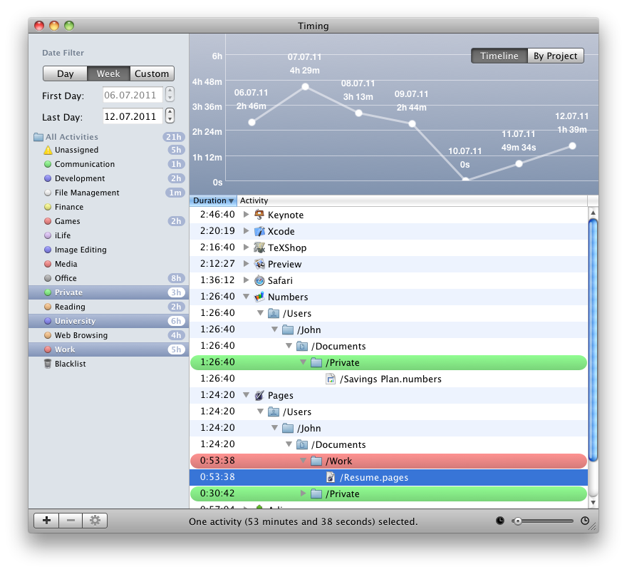

The Timing window consists of several interface elements:
The main view
- Graph view: Gives you a quick overview of the distribution of the time you spent, either by date or by project.
- Activity list: The core of the application. Contains a detailed list of all the activities and files you worked on, grouped by application.
Tip: Option-click the triangle next to an activity in order to expand it completely!
The sidebar
- Date filter: Allows you to only show activities in a specific period.
- Project list: Select projects from this list to only show activities belonging to that project.
The bottom bar
- Project controls: Let you create, delete and edit projects.
- Information bar: Shows the duration of everything currently selected in the activity list. If nothing is selected,
it just shows the total duration of all visible activities.
- Duration slider: If you move this slider to the right, short activities will be hidden from the activity list.
